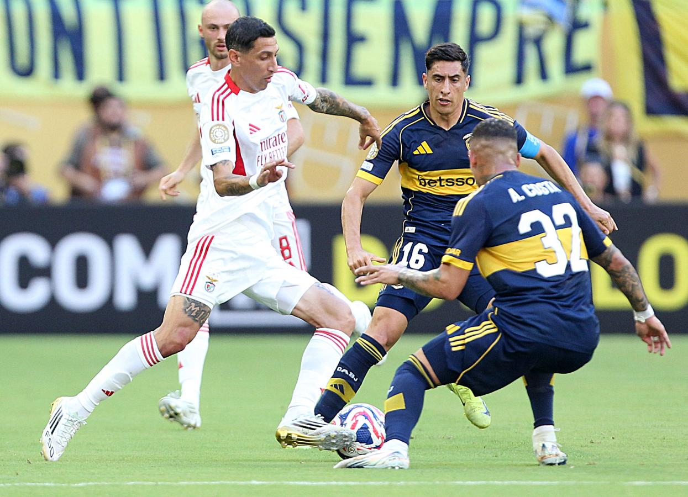

A Boca se le escapó el triunfo en el final y empató 2-2 con Benfica Punto con sabor a poco para el Xeneize en su debut en el Mundial de Clubes.
BOCA debutó en el Mundial de Clubes con un empate que le dejó sabor a poco. Vencía 2-0 a Benfica, no pudo aguantar el resultado y con diez hombres las Águilas lo igualaron 2-2 con un cabezazo de Nicolás Otamendi en el final del partido. Miguel Ángel Russo comenzó su tercer ciclo al frente del Xeneize con un 4-2-3-1 sin Marcos Rojo, Milton Delgado ni Edinson Cavani.
Como se podía observar en los días previos, una marea azul y oro invadió la ciudad costera y hace sentir local a Boca en el Hard Rock. Benfica tomó la iniciativa en el comienzo del encuentro y puso contra las cuerdas a Boca en el primer cuarto de hora. Sin embargo, con el correr del reloj el equipo de Russo se acomodó en la cancha y revirtió el trámite.